An Jing (安静)
Jay Chou (周杰伦)
Album: Fantasy (范特西), 2001
Explore our curated Mandopop collections — browse by mood, discover timeless Chinese classical-style tracks, or dive into Jay Chou's iconic rap catalog. Click any song to listen!
Wind down with these smooth, mellow tracks.
Jay Chou (周杰伦)
Album: Fantasy (范特西), 2001
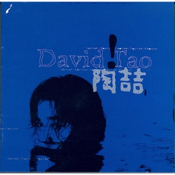
David Tao (陶喆)
Album: David Tao, 1997
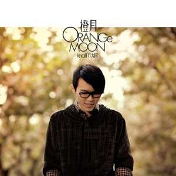
Khalil Fong (方大同)
Album: Timeless, 2009
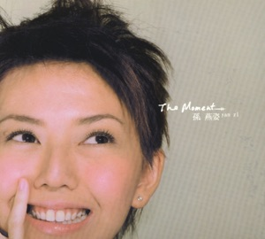
Stefanie Sun (孙燕姿)
From the film "Turn Left, Turn Right," 2003

Vae / Xu Song (许嵩)
From album "Custom (自定义)," 2009
Silence Wang (汪苏泷) ft. BY2
Sweet duet, 2012
Pump up your adrenaline with these powerful tracks.
Jay Chou (周杰伦)
Album: Fantasy (范特西), 2001
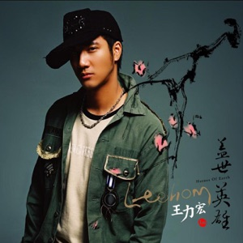
Wang Leehom (王力宏)
Album: Heroes of Earth (盖世英雄), 2005
G.E.M. (邓紫棋)
From the film "Passengers," 2016
Jason Zhang (张杰)
Single, 2008
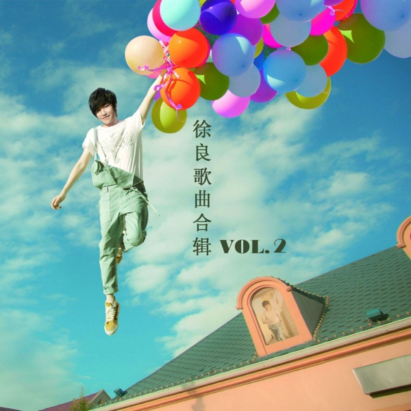
Xu Liang (徐良) ft. Xiao Ling
Viral internet pop hit, 2011
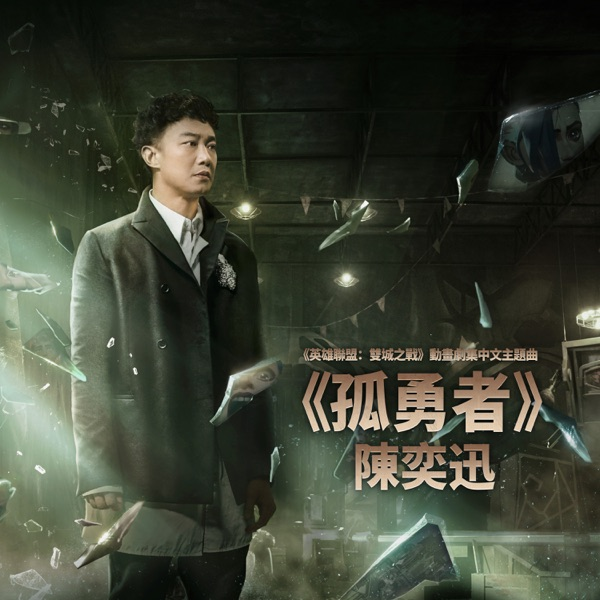
Eason Chan (陈奕迅)
League of Legends "Arcane" theme, 2021
Embrace your feelings with these beautifully sad songs.
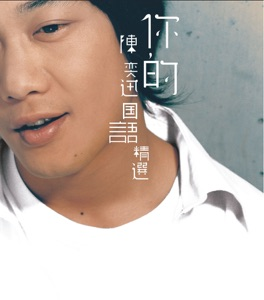
Eason Chan (陈奕迅)
Album: Black White Grey (黑白灰), 2003
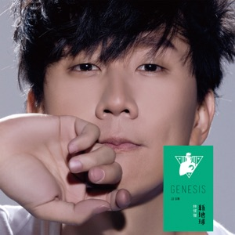
JJ Lin (林俊杰)
Album: Genesis (新地球), 2014
David Tao (陶喆)
Album: I'm OK, 1999
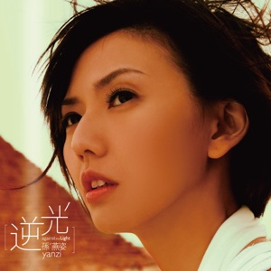
Stefanie Sun (孙燕姿)
Album: Against the Light (逆光), 2007
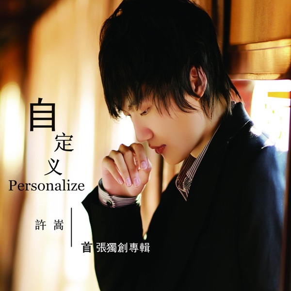
Vae / Xu Song (许嵩)
From album "Custom (自定义)," 2009
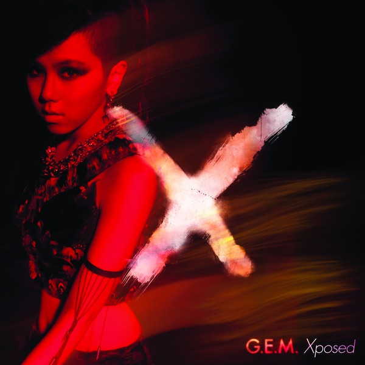
G.E.M. (邓紫棋)
Album: Xposed, 2012
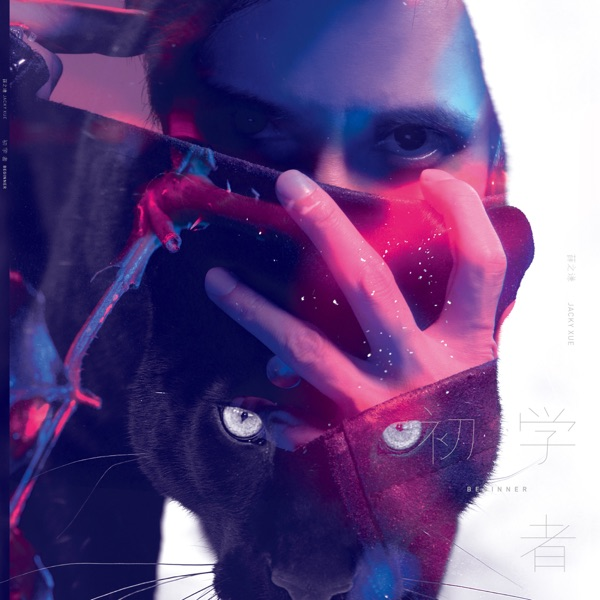
Joker Xue (薛之谦)
Viral comeback mega-hit, 2015
Upbeat tracks perfect for sunny drives and good times.
Jay Chou (周杰伦)
Album: Capricorn (魔杰座), 2008
Stefanie Sun (孙燕姿)
Album: My Desired Happiness, 2001
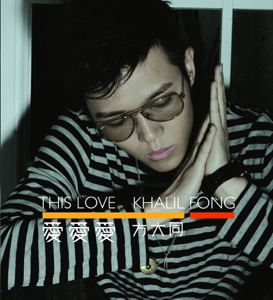
Khalil Fong (方大同)
Album: This Love (爱爱爱), 2006
G.E.M. (邓紫棋)
Album: 18..., 2009
Jay Chou (周杰伦)
Album: Bedtime Stories (床边故事), 2016
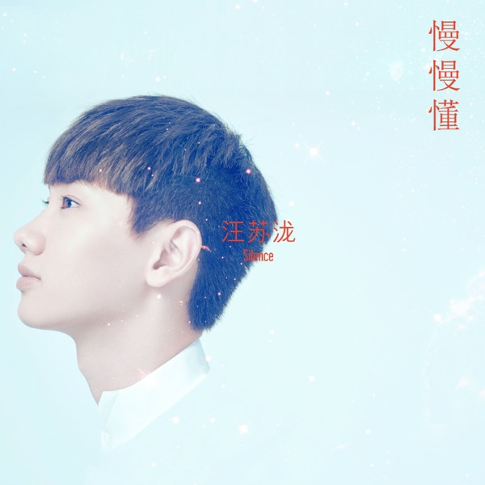
Silence Wang (汪苏泷)
Album: Slowly Understand (慢慢懂), 2010
Atmospheric and introspective tracks for those quiet hours.
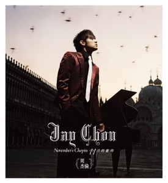
Jay Chou (周杰伦)
Album: November's Chopin (十一月的肖邦), 2005
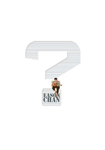
Eason Chan (陈奕迅)
Album: ? (Stranger Under My Skin), 2011
JJ Lin (林俊杰)
Album: Stories Untold (因你而在), 2013
Khalil Fong (方大同)
Album: Dangerous World, 2014
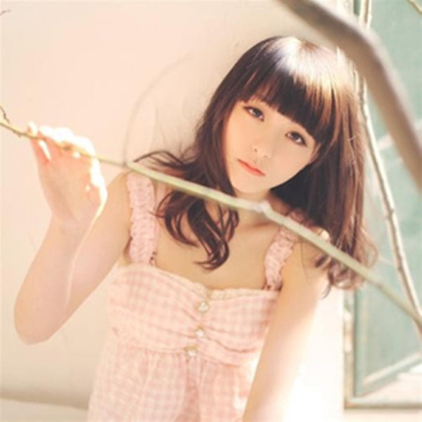
Vae / Xu Song (许嵩) ft. He Manting
Internet music era classic, 2010
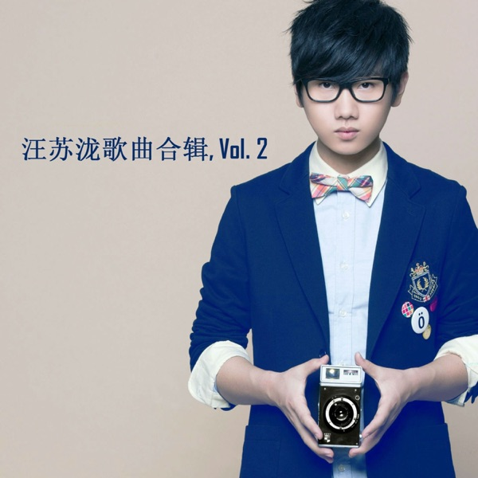
Silence Wang (汪苏泷)
QQ Music #1 hit, 2011
Gentle melodies that help you concentrate without distraction.
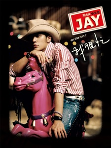
Jay Chou (周杰伦)
Album: On the Run (我很忙), 2007
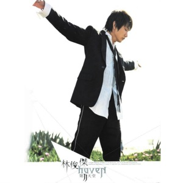
JJ Lin (林俊杰)
Album: Second Heaven (第二天堂), 2004
Wang Leehom (王力宏)
Album: The Only One (唯一), 2001
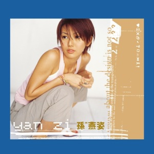
Stefanie Sun (孙燕姿)
Album: Yan Zi (孙燕姿同名专辑), 2000
Songs that blend traditional Chinese instruments, poetic lyrics, and ancient imagery with modern pop production. Jay Chou and Fang Wenshan pioneered this genre.
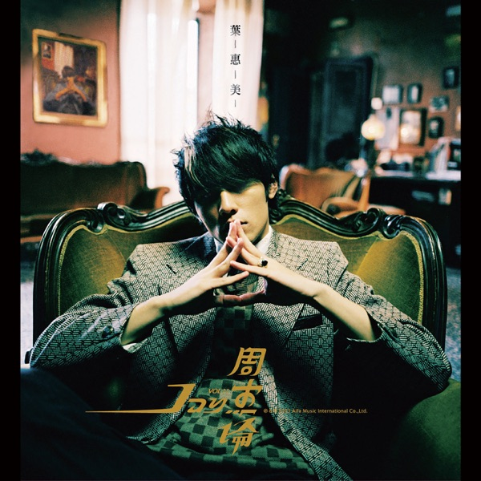
Jay Chou (周杰伦)
Album: Ye Hui Mei (叶惠美), 2003
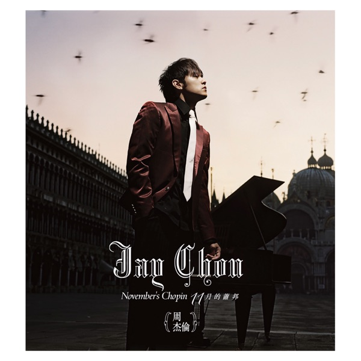
Jay Chou (周杰伦)
Album: November's Chopin (十一月的萧邦), 2005
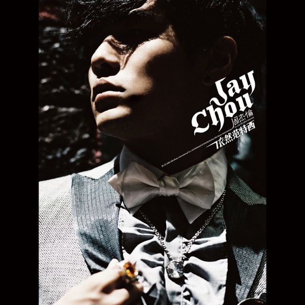
Jay Chou (周杰伦)
Album: Still Fantasy (依然范特西), 2006
Jay Chou (周杰伦)
Album: On the Run (我很忙), 2007
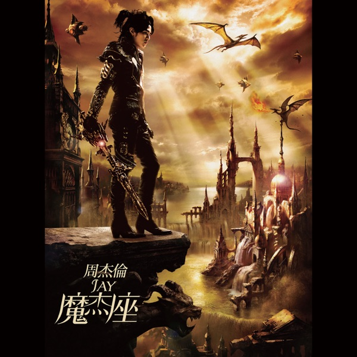
Jay Chou (周杰伦)
Album: The Era (魔杰座), 2008

Xu Song / Vae (许嵩)
Self-released internet single, 2009

Xu Song / Vae (许嵩)
A nostalgic ode to Hefei under moonlight, 2009
Xu Song / Vae (许嵩)
Inspired by West Lake's Broken Bridge, 2008
Jay Chou brought rap to mainstream Mandopop — fast flows, clever wordplay, and genre-blending beats. These tracks showcase his incredible rap skills.
Jay Chou (周杰伦)
Album: Fantasy (范特西), 2001
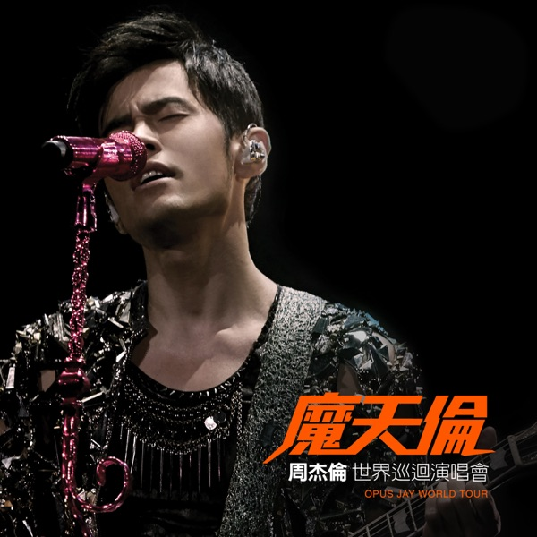
Jay Chou (周杰伦)
Album: The Eight Dimensions (八度空间), 2002

Jay Chou (周杰伦)
Album: Ye Hui Mei (叶惠美), 2003
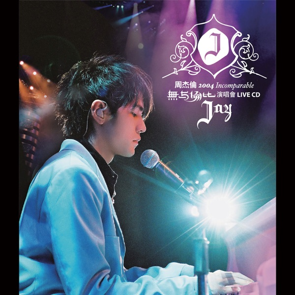
Jay Chou (周杰伦)
Album: Ye Hui Mei (叶惠美), 2003
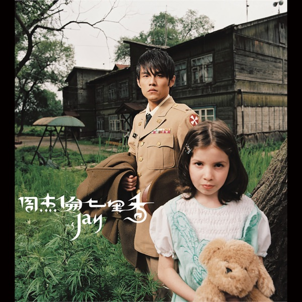
Jay Chou (周杰伦)
Album: Still Fantasy (依然范特西), 2006

Jay Chou (周杰伦)
Album: Still Fantasy (依然范特西), 2006
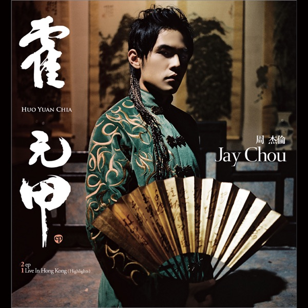
Jay Chou (周杰伦)
Fearless movie theme single, 2006